건설기계설비기사 (2005-08-07 기출문제)
1과목: 재료역학
1. 그림과 같은 봉에 하중 P가 작용하면 환봉에 저장되는 변형 에너지(Strain energy)는? (단, 응력은 각 단면에 균일하게 분포하는 것으로 가정하며, 단면적
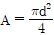
이다.) (문제 오류로 정답이 정확하지 않습니다. 정답지를 찾지못하여 임의 정답 1번으로 설정하였습니다. 정답을 아시는 분께서는 오류 신고를 통하여 정답 입력 부탁 드립니다.)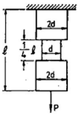
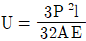
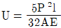
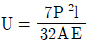
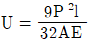
(정답률: 알수없음)

2. 1.8 kN의 인장하중을 받는 연강 원형봉이 인장응력 360 MPa를 생기게 하려면 안전하게 사용할 수 있는 원형봉의 지름은(단. 안전율 S=4로 한다.) (문제 오류로 정답이 정확하지 않습니다. 정답지를 찾지못하여 임의 정답 1번으로 설정하였습니다. 정답을 아시는 분께서는 오류 신고를 통하여 정답 입력 부탁 드립니다.)
- 10.1 mm
- 5.⑤ mm
- 15.15 mm
- 20.5 mm
(정답률: 알수없음)
3. 그림과 같은 스트레인 로제트(strain rosette)에서 εa=100×10-6, εb=200×10-6, εa=900×10-6 이다. 이때 주변형률의 크기는? (문제 오류로 정답이 정확하지 않습니다. 정답지를 찾지못하여 임의 정답 1번으로 설정하였습니다. 정답을 아시는 분께서는 오류 신고를 통하여 정답 입력 부탁 드립니다.)
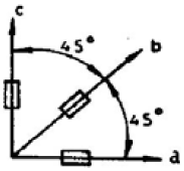
- ε1= -10-3, ε2 = 0
- ε1= 0, ε2 = -10×10-3
- ε1= 10×10-3, ε2 = 0
- ε1= 10-3, ε2 = 0
(정답률: 알수없음)
4. 그림의 경우 보 중앙의 처짐으로 옳은 것은? (문제 오류로 정답이 정확하지 않습니다. 정답지를 찾지못하여 임의 정답 1번으로 설정하였습니다. 정답을 아시는 분께서는 오류 신고를 통하여 정답 입력 부탁 드립니다.)
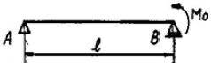
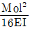
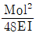
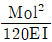
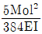
(정답률: 알수없음)
5. 그림과 같이 반원부재에 하중 P가 작용할 때 C점을 통하는 단면에서의 내부 모멘트는? (문제 오류로 정답이 정확하지 않습니다. 정답지를 찾지못하여 임의 정답 1번으로 설정하였습니다. 정답을 아시는 분께서는 오류 신고를 통하여 정답 입력 부탁 드립니다.)
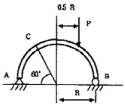
- PR/8
- PR/4
- PR/2
- PR
(정답률: 알수없음)
6. 그림과 같은 일단 고정 타단지지보에 등분포하중이 전길이에 걸쳐 작용하고 있는 경우의 굽힘모멘트 선도로 형태가 제일 유사한 것은? (문제 오류로 정답이 정확하지 않습니다. 정답지를 찾지못하여 임의 정답 1번으로 설정하였습니다. 정답을 아시는 분께서는 오류 신고를 통하여 정답 입력 부탁 드립니다.)
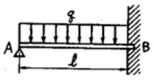
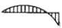
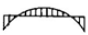
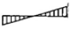
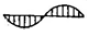
(정답률: 알수없음)
7. 두께 8 mm인 가죽 벨트가 1200 rpm으로 회전하는 d=400mm의 풀리에 감겨져 있을 때 원심력에 의해 벨트속에 발생하는 인장응력은 몇 kPa인가? (단 가죽의 비중량 ϒ=9810N/m3이다.) (문제 오류로 정답이 정확하지 않습니다. 정답지를 찾지못하여 임의 정답 1번으로 설정하였습니다. 정답을 아시는 분께서는 오류 신고를 통하여 정답 입력 부탁 드립니다.)
- 632
- 7700
- 879
- 5778
(정답률: 알수없음)
8. 원형단면축이 비틀림에 의한 전단응력 τ 라 τ 의 2배 크기인 굽힘에 의한 수직응력 σb 를 동시에 받고 있을 때 최대 전단응력은 수직응력의 몇 배인가? (문제 오류로 정답이 정확하지 않습니다. 정답지를 찾지못하여 임의 정답 1번으로 설정하였습니다. 정답을 아시는 분께서는 오류 신고를 통하여 정답 입력 부탁 드립니다.)
- 1/√2
- √2
- 1/√3
- √3
(정답률: 알수없음)
9. 직경이 d이고 길이가 L인 강봉에 인장하중 P가 작용하고 있다. 강봉의 탄성계수가 E라하면 강봉의 전체 탄성에너지 U는 얼마인가? (문제 오류로 정답이 정확하지 않습니다. 정답지를 찾지못하여 임의 정답 1번으로 설정하였습니다. 정답을 아시는 분께서는 오류 신고를 통하여 정답 입력 부탁 드립니다.)
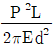
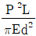
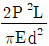
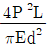
(정답률: 알수없음)
10. 그림과 같은 계단 단면의 중심 원형축의 양단을 고정하고 계단 단면부에 비틀림 모멘트 T가 작용할 경우 지름 D1과 D2의 축에 작용하는 비틀림 모멘트의 비 T1/T2 은? (단, D1= 8㎝ , D2= 4㎝ , ℓ1= 40㎝, ℓ2= 10㎝ 이다.) (문제 오류로 정답이 정확하지 않습니다. 정답지를 찾지못하여 임의 정답 1번으로 설정하였습니다. 정답을 아시는 분께서는 오류 신고를 통하여 정답 입력 부탁 드립니다.)
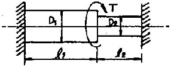
- 2
- 4
- 6
- 8
(정답률: 알수없음)
11. 지름 20 mm, 길이 200 mm인 연강봉이 인강하중에 의하여 길이는 0.0016 mm 늘어나고 지름이 0.000⑤ mm 만큼 줄었다면 이 재료의 포아송 비(Poisson's Ratio) μ는? (문제 오류로 정답이 정확하지 않습니다. 정답지를 찾지못하여 임의 정답 1번으로 설정하였습니다. 정답을 아시는 분께서는 오류 신고를 통하여 정답 입력 부탁 드립니다.)
- 1/5.2
- 1/4.2
- 1/3.2
- 1/2.2
(정답률: 알수없음)
12. 굽힘모멘트에 의한 수직응력의 분포를 옳게 표현한 것은? (문제 오류로 정답이 정확하지 않습니다. 정답지를 찾지못하여 임의 정답 1번으로 설정하였습니다. 정답을 아시는 분께서는 오류 신고를 통하여 정답 입력 부탁 드립니다.)
- 단면의 중립축에서 수직응력이 최대이다.
- 단면의 중립축에서 항상 0 이다.
- 중립축으로부터 곡선적으로 변화한다.
- 상, 하 단면에서도 항상 0 이다.
(정답률: 알수없음)
13. 그림에 표시한 단수 지지보에서의 최대 처짐량은? (문제 오류로 정답이 정확하지 않습니다. 정답지를 찾지못하여 임의 정답 1번으로 설정하였습니다. 정답을 아시는 분께서는 오류 신고를 통하여 정답 입력 부탁 드립니다.)
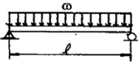
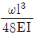
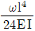
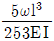
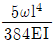
(정답률: 알수없음)
14. 그림과 같은 보에서 발생하는 최대굽힘 모멘트는? (문제 오류로 정답이 정확하지 않습니다. 정답지를 찾지못하여 임의 정답 1번으로 설정하였습니다. 정답을 아시는 분께서는 오류 신고를 통하여 정답 입력 부탁 드립니다.)
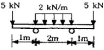
- 2 kN･m
- 5 kN･m
- 7 kN･m
- 10 kN･m
(정답률: 알수없음)
15. 그림과 같은 외팔보의 최대 처짐은? (문제 오류로 정답이 정확하지 않습니다. 정답지를 찾지못하여 임의 정답 1번으로 설정하였습니다. 정답을 아시는 분께서는 오류 신고를 통하여 정답 입력 부탁 드립니다.)
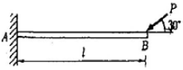
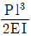
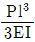
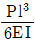
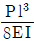
(정답률: 알수없음)
16. 바깥지름이 300mm인 평 벨트 휘일에 벨트의 유효장력 2000N이 작용되고 있다면 축에 전달되는 비틀림모멘트는 몇 N-m인가? (문제 오류로 정답이 정확하지 않습니다. 정답지를 찾지못하여 임의 정답 1번으로 설정하였습니다. 정답을 아시는 분께서는 오류 신고를 통하여 정답 입력 부탁 드립니다.)
- 600
- 500
- 400
- 300
(정답률: 알수없음)
17. 길이 L, 단면적 A, 무게 W인 막대의 상단을 고정하여 매달았다. 내부에 저장되는 부피당 변형에너지를 나타내는 식은? (단, γ는 재료의 비중량, E는 탄성계수, σ는 응력) (문제 오류로 정답이 정확하지 않습니다. 정답지를 찾지못하여 임의 정답 1번으로 설정하였습니다. 정답을 아시는 분께서는 오류 신고를 통하여 정답 입력 부탁 드립니다.)
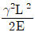
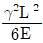
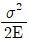
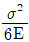
(정답률: 알수없음)
18. 그림과 같은 길이 3 m의 원형 단면의 연강봉 기둥에 P = 100kN의 축압축 하중을 작용하려고 한다. 안전율은 5로 하고 오일러(Euler)공식을 사용하면 이 기둥의 지름 몇 cm가 옳은가? (단, 기둥은 양단고정이고, 탄성계수 E=210 GPa이다.) (문제 오류로 정답이 정확하지 않습니다. 정답지를 찾지못하여 임의 정답 1번으로 설정하였습니다. 정답을 아시는 분께서는 오류 신고를 통하여 정답 입력 부탁 드립니다.)
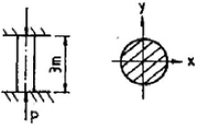
- 5.77
- 4.71
- 3.86
- 2.64
(정답률: 알수없음)
19. 반경 r, 압력 P, 두께 t인 실린더형 압력용기에서 발생되는 절대최대 전단응력(3차원 응력상태에서의 최대 전단응력)의 크기는? (문제 오류로 정답이 정확하지 않습니다. 정답지를 찾지못하여 임의 정답 1번으로 설정하였습니다. 정답을 아시는 분께서는 오류 신고를 통하여 정답 입력 부탁 드립니다.)
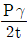
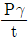
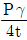
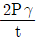
(정답률: 알수없음)
20. 짧은 강재 파이프에 P=1000 kN의 축방향 압축력이 작용할 때 파이프에 항복이 발생되지 않게 하려면 최소 바깥지름(d)은 몇 mm인가? (단. 항복응력에 대한 안전계수는 2이며, 파이프의 두께는 바깥지름의 1/8이고, 강의 항복응력은 250 Mpa이다.) (문제 오류로 정답이 정확하지 않습니다. 정답지를 찾지못하여 임의 정답 1번으로 설정하였습니다. 정답을 아시는 분께서는 오류 신고를 통하여 정답 입력 부탁 드립니다.)
- 143
- 153
- 163
- 173
(정답률: 알수없음)
2과목: 기계열역학
21. 초기에 300K, 150kPa인 공기 0.5m3을 등온과정으로 600kPa까지 천천히 압축하였다. 이 과정동안 일을 계산하면? (문제 오류로 정답이 정확하지 않습니다. 정답지를 찾지못하여 임의 정답 1번으로 설정하였습니다. 정답을 아시는 분께서는 오류 신고를 통하여 정답 입력 부탁 드립니다.)
- -104 kJ
- -208 KJ
- -52 kJ
- -312 kJ
(정답률: 알수없음)
22. 다음중 강도성 상태량(Intensive property)은? (문제 오류로 정답이 정확하지 않습니다. 정답지를 찾지못하여 임의 정답 1번으로 설정하였습니다. 정답을 아시는 분께서는 오류 신고를 통하여 정답 입력 부탁 드립니다.)
- 온도
- 체적
- 질량
- 내부에너지
(정답률: 알수없음)
23. 계가 비가역 사이클을 이룰 때 클라우지우스(Clausius)의 적분은? (문제 오류로 정답이 정확하지 않습니다. 정답지를 찾지못하여 임의 정답 1번으로 설정하였습니다. 정답을 아시는 분께서는 오류 신고를 통하여 정답 입력 부탁 드립니다.)
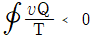
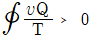
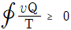
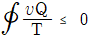
(정답률: 알수없음)
24. 열펌프를 난방에 이용하려 한다. 실내 온도는 18℃이고, 실외 온도는 -15℃이며 벽을 통한 열손실은 12㎾이다. 열펌프를 구동하기 위해 필요한 초소 일률(동력)은? (문제 오류로 정답이 정확하지 않습니다. 정답지를 찾지못하여 임의 정답 1번으로 설정하였습니다. 정답을 아시는 분께서는 오류 신고를 통하여 정답 입력 부탁 드립니다.)
- 0.65 ㎾
- 0.74 ㎾
- 1.36 ㎾
- 1.53 ㎾
(정답률: 알수없음)
25. 질량유량 0.⑤㎏/s의 냉매 134a 0.14MPa, -10℃의 과열증기(비엔탈피 243.40kJ/kg)로 압축기에 들어가서 0.8MPa, 50℃(비엔탈피 284.39kJ/kg)가 되어 나간다. 응축기에서 26℃, 0.72MPa(비엔탈피 85.75kJ/kg)로 냉각되고 0.15 MPa로 교축된다. 부품 사이 배관에서 압력강하나 열전달은 무시할 때 이 냉동기의 성능계수는? (문제 오류로 정답이 정확하지 않습니다. 정답지를 찾지못하여 임의 정답 1번으로 설정하였습니다. 정답을 아시는 분께서는 오류 신고를 통하여 정답 입력 부탁 드립니다.)
- 0.21
- 0.26
- 3.84
- 4.84
(정답률: 알수없음)
26. 시속 30km로 주행하고 있는 질량 306kg의 자동차가 브레이크를 밟았더니 8.8m에서 정지했다. 베어링 마찰을 무시하고 브레이크에 의해서 제동된 것으로 보았을 때 브레이크로부터 발생한 열량은? (단, 차륜과 도로면의 마찰계수는 0.4로 한다.) (문제 오류로 정답이 정확하지 않습니다. 정답지를 찾지못하여 임의 정답 1번으로 설정하였습니다. 정답을 아시는 분께서는 오류 신고를 통하여 정답 입력 부탁 드립니다.)
- 약 25.6kJ
- 약 20.6kJ
- 약 15.6kJ
- 약 10.6kJ
(정답률: 알수없음)
27. 저열원의 온도가 20℃이다. 100℃ 및 1000℃인 고온체에서 등온 과정으로 2100 KJ의 열을 받았을 때 각각의 무용에너지(unavailable energy)는? (문제 오류로 정답이 정확하지 않습니다. 정답지를 찾지못하여 임의 정답 1번으로 설정하였습니다. 정답을 아시는 분께서는 오류 신고를 통하여 정답 입력 부탁 드립니다.)
- 2650 KJ, 16493 KJ
- 1987 KJ, 995 KJ
- 4830 KJ, 16493 KJ
- 1650 KJ, 483 KJ
(정답률: 알수없음)
28. 정압비열 Cp=1.041 KJ/kg·k 인 일산화탄소의 정적비열(Cv)은? (문제 오류로 정답이 정확하지 않습니다. 정답지를 찾지못하여 임의 정답 1번으로 설정하였습니다. 정답을 아시는 분께서는 오류 신고를 통하여 정답 입력 부탁 드립니다.)
- 약 1.7246 kJ/kg·k
- 약 0.7442 kJ/kg·k
- 약 1.3378 kJ/kg·k
- 약 0.1327 kJ/kg·k
(정답률: 알수없음)
29. 500℃의 고온부와 50℃의 저온부 사이에서 작동하는 Carnot 사이클 열기관의 열효율은 얼마인가? (문제 오류로 정답이 정확하지 않습니다. 정답지를 찾지못하여 임의 정답 1번으로 설정하였습니다. 정답을 아시는 분께서는 오류 신고를 통하여 정답 입력 부탁 드립니다.)
- 10%
- 42%
- 58%
- 90%
(정답률: 알수없음)
30. 중력에 의한 표준 가속도가 9.80665m/s2이다. 50kg의 질량에 작용하는 표준중력에 의한 힘은 약 얼마인가? (문제 오류로 정답이 정확하지 않습니다. 정답지를 찾지못하여 임의 정답 1번으로 설정하였습니다. 정답을 아시는 분께서는 오류 신고를 통하여 정답 입력 부탁 드립니다.)
- 300.45N
- 390.33N
- 400.45N
- 490.33N
(정답률: 알수없음)
31. 냄비를 이용하여 요리할 때 다음 중 요리에 필요한 가열 시간이 가장 짧은 것은? (문제 오류로 정답이 정확하지 않습니다. 정답지를 찾지못하여 임의 정답 1번으로 설정하였습니다. 정답을 아시는 분께서는 오류 신고를 통하여 정답 입력 부탁 드립니다.)
- 뚜껑이 없는 냄비
- 가벼운 뚜껑이 있는 냄비
- 무거운 뚜껑이 있는 냄비
- 가열시간은 뚜껑에 관계 없이 항상 일정하다.
(정답률: 알수없음)
32. 공기냉동기에서 압축기 입구의 온도가 -5℃, 출구에서는 1⑤℃, 또 팽창기 입구에서 10℃, 출구에서는 -70℃이면 공기 1kg당의 냉동효과는 몇 kJ/kg 인가? (단, 공기의 정압비열은 1.0035 kj/kg·k 로서 일정하다.) (문제 오류로 정답이 정확하지 않습니다. 정답지를 찾지못하여 임의 정답 1번으로 설정하였습니다. 정답을 아시는 분께서는 오류 신고를 통하여 정답 입력 부탁 드립니다.)
- 15.1
- 65.2
- 80.3
- 110.4
(정답률: 알수없음)
33. 표준 증기압축식 냉동사이클에서 압축기 입구와 출구의 엔탈피가 1⑤kJ/kg이다. 응축기 출구의 엔탈피가 43kJ/kg 이라면 이 냉동사이클의 성적계수(COP)은? (문제 오류로 정답이 정확하지 않습니다. 정답지를 찾지못하여 임의 정답 1번으로 설정하였습니다. 정답을 아시는 분께서는 오류 신고를 통하여 정답 입력 부탁 드립니다.)
- 2.6
- 2.1
- 3.1
- 4.1
(정답률: 알수없음)
34. 터빈을 통과하는 유체로서 물이 흐를 경우, 마찰열에 의해 물의 온도가 18℃에서 20℃로 상승하였다. 터빈에서 열전달이 없었다면 터빈 통과 중 물 1kg당 엔트로피 변화량은 얼마인가? (단, 비열 C = 4.184 kJ/kg·k 이다.) (문제 오류로 정답이 정확하지 않습니다. 정답지를 찾지못하여 임의 정답 1번으로 설정하였습니다. 정답을 아시는 분께서는 오류 신고를 통하여 정답 입력 부탁 드립니다.)
- 8.37 kJ/kg·k
- 4.21kJ/kg·k
- 0.0287kJ/kg·k
- 0.0069kJ/kg·k
(정답률: 알수없음)
35. 압축비가 7.5이고 비열비 K=1.4인 오토(Otto) 사이클의 열효율은? (문제 오류로 정답이 정확하지 않습니다. 정답지를 찾지못하여 임의 정답 1번으로 설정하였습니다. 정답을 아시는 분께서는 오류 신고를 통하여 정답 입력 부탁 드립니다.)
- 48.7%
- 51.2%
- 55.3%
- 57.6%
(정답률: 알수없음)
36. 두열원의 온도는 T1A＞T1B이고. 저온 열저장소의 온도는 T2 = T2A = T2B 이며, 공급열 Q1 = Q1A = Q1B인 두가역 열기관의 열효율 ηA 및 ηB는? (문제 오류로 정답이 정확하지 않습니다. 정답지를 찾지못하여 임의 정답 1번으로 설정하였습니다. 정답을 아시는 분께서는 오류 신고를 통하여 정답 입력 부탁 드립니다.)
- ηA ＞ ηB
- ηA ＜ ηB
- ηA = ηB
- ηA ≤ ηB
(정답률: 알수없음)
37. 600kPa, 300 K 상태의 알곤(argon) 기체 1kmol이 엔탈피가 일정한 과정을 거쳐 압력이 원래의 1.3 배가 되었다. 일반기체상수
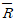
= 8.31451 kJ/kmolk 이다. 이 과정 동안 알곤(이상 기체)의 엔트로피 변화량은? (문제 오류로 정답이 정확하지 않습니다. 정답지를 찾지못하여 임의 정답 1번으로 설정하였습니다. 정답을 아시는 분께서는 오류 신고를 통하여 정답 입력 부탁 드립니다.)- 0.782 kJ/K
- 8.31 kJ/K
- 9.13 kJ/K
- 60.0 kJ/K
(정답률: 알수없음)
38. 단열 밀폐된 실내에서 [A]의 경우는 냉장고 문을 닫고 [B]의 경우는 냉장고 문을 연채 냉장고 작동시켰을 때 실내온도의 변호는? (문제 오류로 정답이 정확하지 않습니다. 정답지를 찾지못하여 임의 정답 1번으로 설정하였습니다. 정답을 아시는 분께서는 오류 신고를 통하여 정답 입력 부탁 드립니다.)
- [A]는 실내온도 상승, [B]는 실내온도 변화 없음.
- [A]는 실내온도 변화 없음. [B]는 실내온도 하강
- [A],[B] 모두 실내온도가 상승
- [A]는 실내온도 상승, [B]는 실내온도 하강
(정답률: 알수없음)
39. 밀폐계에서 기체의 압력이 100kPa으로 일정하게 유지되면서 체적이 1m3에서 2m3으로 증가되었을 때 옳은 설명은? (문제 오류로 정답이 정확하지 않습니다. 정답지를 찾지못하여 임의 정답 1번으로 설정하였습니다. 정답을 아시는 분께서는 오류 신고를 통하여 정답 입력 부탁 드립니다.)
- 밀폐곙의 에너지 변화는 없다.
- 외부로 행한 일은 100kJ이다.
- 기체가 이상기체라면 온도가 일정하다.
- 기체가 받은 열은 100kJ이다.
(정답률: 알수없음)
40. 다음의 압력 중에서 표준대기압과 차이가 가장 큰 압력은? (문제 오류로 정답이 정확하지 않습니다. 정답지를 찾지못하여 임의 정답 1번으로 설정하였습니다. 정답을 아시는 분께서는 오류 신고를 통하여 정답 입력 부탁 드립니다.)
- 1 MPa
- 1 bar
- 0 kPa gauge(계기압력)
- 760 mmHg
(정답률: 알수없음)
3과목: 기계유체역학
41. 점성계수가 μ = 0.098 N · s/m2인 유체가 평판 위를 u = 750y - 2.5×10-6y3 m/s의 속도분포로 흐를 때 벽면에서의 전단응력은 몇 N/m2인가? (단, y는 벽면으로부터 m 단위로 잰 수직거리이다.) (문제 오류로 정답이 정확하지 않습니다. 정답지를 찾지못하여 임의 정답 1번으로 설정하였습니다. 정답을 아시는 분께서는 오류 신고를 통하여 정답 입력 부탁 드립니다.)
- 7.35
- 73.5
- 735
- 0.735
(정답률: 알수없음)
42. 피토정압관의 두 구멍 사이에 차압계를 연결하여 풍동실험에 사용했는데 ΔP가 700 Pa이었다. 풍동에서의 공기속도는 몇 ㎧인가? (단, 풍동에서의 압력과 온도는 각각 98 kPa과 20℃이고 공기의 기체상수는 287 J/kg·K 이다.) (문제 오류로 정답이 정확하지 않습니다. 정답지를 찾지못하여 임의 정답 1번으로 설정하였습니다. 정답을 아시는 분께서는 오류 신고를 통하여 정답 입력 부탁 드립니다.)
- 32.53
- 34.67
- 36.85
- 38.94
(정답률: 알수없음)
43. 레이놀즈수(Re)가 0.6보다 작은 유체속에 놓여있는 구(球)의 항력은? (단, d: 구의 지름, V=유체에 대한 구의 상대속도, μ: 유체의 점성계수, 항력계수(CD) = 24/Re) (문제 오류로 정답이 정확하지 않습니다. 정답지를 찾지못하여 임의 정답 1번으로 설정하였습니다. 정답을 아시는 분께서는 오류 신고를 통하여 정답 입력 부탁 드립니다.)
- πμV2
- πdμV
- 3πdμV
- 3πdμV2
(정답률: 알수없음)
44. 내경이 100mm인 파이프에 비중 0.8인 기름이 평균속도 4m/s 로 흐를 때 질량유량은 몇 kg/s 인가? (문제 오류로 정답이 정확하지 않습니다. 정답지를 찾지못하여 임의 정답 1번으로 설정하였습니다. 정답을 아시는 분께서는 오류 신고를 통하여 정답 입력 부탁 드립니다.)
- 3.25
- 2.56
- 25.1
- 44.8
(정답률: 알수없음)
45. 수평 원관 내의 유동에 관한 설명 중 옳은 것은? (문제 오류로 정답이 정확하지 않습니다. 정답지를 찾지못하여 임의 정답 1번으로 설정하였습니다. 정답을 아시는 분께서는 오류 신고를 통하여 정답 입력 부탁 드립니다.)
- 완전 발달한 층류유동에서 압력강하는 관 길이의 제곱에 비례한다.
- 완전 발달한 층류유동에서의 마찰계수는 관의 거칠기(조도)와는 무관하다.
- 완전 발달한 층류유동에서 비점성 핵(core)영역이 존재한다.
- 원관 내의 완전 발달한 유동은 원관을 지나면서 점차층류, 천이 및 난류로 유동이 변한다.
(정답률: 알수없음)
46. 익폭10 m, 익현의 길이 1.8 m인 날개로 된 비행기가 112m/s 의 속도로 날고 있다. 익현의 영각이 1∘ , 양력계수 0.326, 항력계수 0.0761 일 때 비행에 필요한 동력은 몇 kW인가? (단, 공기의 밀도는 1.2173 kg/m3 이다.) (문제 오류로 정답이 정확하지 않습니다. 정답지를 찾지못하여 임의 정답 1번으로 설정하였습니다. 정답을 아시는 분께서는 오류 신고를 통하여 정답 입력 부탁 드립니다.)
- 1171
- 1343
- 1570
- 6730
(정답률: 알수없음)
47. 어떤 거친 원관에서의 유동이 완전 난류유동일 때, 이 관에서의 유체 흐름 설명으로 옳은 것은? (문제 오류로 정답이 정확하지 않습니다. 정답지를 찾지못하여 임의 정답 1번으로 설정하였습니다. 정답을 아시는 분께서는 오류 신고를 통하여 정답 입력 부탁 드립니다.)
- 수두손실은 속도의 제곱에 따라서 변화한다.
- 마찰계수는 레이놀즈수에만 관계한다.
- 마찰계수는 64/Re로 주어진다.
- 거치른 관과 매끈한 관은 같은 마찰계수를 갖는다.
(정답률: 알수없음)
48. 연속 방정식(continuity equation)이란? (문제 오류로 정답이 정확하지 않습니다. 정답지를 찾지못하여 임의 정답 1번으로 설정하였습니다. 정답을 아시는 분께서는 오류 신고를 통하여 정답 입력 부탁 드립니다.)
- 뉴턴의 운동법칙을 유체유동에 적용하여 얻어진 방정식이다.
- 에너지와 일사이의 관계를 주는 방정식이다.
- 유체의 입자에 뉴턴의 관성 법칙을 적용시킨다.
- 질량보존의 법칙을 유체유동에 적용한 방정식이다.
(정답률: 알수없음)
49. 다음 중 밀도가 가장 큰 것은? (문제 오류로 정답이 정확하지 않습니다. 정답지를 찾지못하여 임의 정답 1번으로 설정하였습니다. 정답을 아시는 분께서는 오류 신고를 통하여 정답 입력 부탁 드립니다.)
- 1 g/m3
- 1200 kg/m3
- 비중 1.5
- 비중량 8000 N/m3
(정답률: 알수없음)
50. 다음 중 완전 발달된 파이프 유동의 속도분포에 대한 설명 중 맞는 것은? (단, r은 반경방향 거리이며, x는 길이방향 거리이다.) (문제 오류로 정답이 정확하지 않습니다. 정답지를 찾지못하여 임의 정답 1번으로 설정하였습니다. 정답을 아시는 분께서는 오류 신고를 통하여 정답 입력 부탁 드립니다.)
- u = f(r,x)
- u = f(r)
- u = f(x)
- u = (dr/dx)
(정답률: 알수없음)
51. 동점성계수 1.0×10-6 m2/s인 물이 지름 10㎝인 관 속을 유속 4㎧로 흐른다. 동점성계수 2.0×10-6 m2/s인 어떤 유체가 지름 5cm인 관 속을 흐를 때, 두 경우가 완전히 상사가 되기 위한 이 유체의 유속은 몇 ㎧인가? (문제 오류로 정답이 정확하지 않습니다. 정답지를 찾지못하여 임의 정답 1번으로 설정하였습니다. 정답을 아시는 분께서는 오류 신고를 통하여 정답 입력 부탁 드립니다.)
- 1
- 3
- 8
- 16
(정답률: 알수없음)
52. 반지름이 10㎝인 원통용기안에 물을 넣어 일정한 속도로 돌렸더니 원통중심과 벽면에서의 액면차가 4㎝로 나타났다. 원통의 회전수는 얼마인가? (문제 오류로 정답이 정확하지 않습니다. 정답지를 찾지못하여 임의 정답 1번으로 설정하였습니다. 정답을 아시는 분께서는 오류 신고를 통하여 정답 입력 부탁 드립니다.)
- 30rpm
- 45rpm
- 60rpm
- 85rpm
(정답률: 알수없음)
53. 유량이 0.5 m3/min 일때 손실수두가 5m인 관로를 통하여 20m 높이 위에 있는 저수조로 물을 이송하고자 한다. 펌프의 효율이 90%라고 할때 펌프에 공급해야 하는 전력은 몇 kW인가? (문제 오류로 정답이 정확하지 않습니다. 정답지를 찾지못하여 임의 정답 1번으로 설정하였습니다. 정답을 아시는 분께서는 오류 신고를 통하여 정답 입력 부탁 드립니다.)
- 0.45
- 1.84
- 2.27
- 136
(정답률: 알수없음)
54. 그림과 같이 폭(幅) 1.2m 높이 2m의 수문(水門)이 수압에 의하여 열리지 못하도록 하기 위하여 수문의 하단 B에 받쳐 주어야 할 최소한의 힘 P는 몇 kN 정도인가? (문제 오류로 정답이 정확하지 않습니다. 정답지를 찾지못하여 임의 정답 1번으로 설정하였습니다. 정답을 아시는 분께서는 오류 신고를 통하여 정답 입력 부탁 드립니다.)
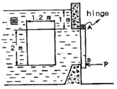
- 4.2
- 17.9
- 27.4
- 51.0
(정답률: 알수없음)
55. 뉴턴 유체(newtonian fluid)란? (문제 오류로 정답이 정확하지 않습니다. 정답지를 찾지못하여 임의 정답 1번으로 설정하였습니다. 정답을 아시는 분께서는 오류 신고를 통하여 정답 입력 부탁 드립니다.)
- 유체 유동시 마찰 전단응력이 일정한 유체이다.
- 유체 유동시 마찰 전단응력이 존재하지 않는 유체이다.
- 유체 유동시 마찰 전단응력이 속도구배에 비례하는 유체이다.
- 유체 유동시 마찰 전단응력이 속도구배에 반비례하는 유체이다.
(정답률: 알수없음)
56. 아주 긴 원관 속을 유체가 층류(laminar flow)로 흐를 때 최대속도는 평균속도의 몇 배가 되는가? (문제 오류로 정답이 정확하지 않습니다. 정답지를 찾지못하여 임의 정답 1번으로 설정하였습니다. 정답을 아시는 분께서는 오류 신고를 통하여 정답 입력 부탁 드립니다.)
- 3배
- 2배
- 2/3배
- 1/2배
(정답률: 알수없음)
57. 정체압(stagnation pressure)과 정압(static pressure)이 같아지는 곳은? (문제 오류로 정답이 정확하지 않습니다. 정답지를 찾지못하여 임의 정답 1번으로 설정하였습니다. 정답을 아시는 분께서는 오류 신고를 통하여 정답 입력 부탁 드립니다.)
- 자유제트의 출구
- 자유유동(free stream)
- 점성저층(viscous sublayer)
- 정체점
(정답률: 알수없음)
58. 바다위에 얼음이 떠 있다. 수면위로 나와 있는 체적은 45 m3, 얼음의 비중은 0.88이다. 해수의 비주을 1.025라 할 때 이 얼음의 질량은 몇 kg인가? (문제 오류로 정답이 정확하지 않습니다. 정답지를 찾지못하여 임의 정답 1번으로 설정하였습니다. 정답을 아시는 분께서는 오류 신고를 통하여 정답 입력 부탁 드립니다.)
- 280×103
- 285×102
- 280
- 285
(정답률: 알수없음)
59. 무차원 속도 포텐셜이 ϕ=2lnr 일 때 r=2에서의 반경방향 무차원 속도의 크기는? (문제 오류로 정답이 정확하지 않습니다. 정답지를 찾지못하여 임의 정답 1번으로 설정하였습니다. 정답을 아시는 분께서는 오류 신고를 통하여 정답 입력 부탁 드립니다.)
- 0.5
- 1.0
- 2.0
- 4.0
(정답률: 알수없음)
60. 풍동(wind tunnel)실험에서 고려해야할 무차원수 중 가장 거리가 먼 것은? (문제 오류로 정답이 정확하지 않습니다. 정답지를 찾지못하여 임의 정답 1번으로 설정하였습니다. 정답을 아시는 분께서는 오류 신고를 통하여 정답 입력 부탁 드립니다.)
- 프루드(Froude)수
- 레이놀즈(Reynolds)수
- 마하(Mach)수
- 코시(Cauchy)수
(정답률: 알수없음)
4과목: 유체기계 및 유압기기
61. 디젤기관의 착화성을 정량적으로 표시하는 세탄가(CN)를 나타내는 것은? (문제 오류로 정답이 정확하지 않습니다. 정답지를 찾지못하여 임의 정답 1번으로 설정하였습니다. 정답을 아시는 분께서는 오류 신고를 통하여 정답 입력 부탁 드립니다.)
- 1-메탈나프탈렌(C11H10)과 이소옥탄(C8H18)의 비
- 노멀헵탄(C7H16)과 이소옥탄(C8H18)의 비
- 세탄(C16H34)과 1-메탈나프탈렌(C11H10))의 비
- 세탄(C16H34)과 이소옥탄(C8H18)의 비
(정답률: 알수없음)
62. 링기어의 잇누는 113개이고, 피니언 잇수가 9개일 경우, 총 배기량이 1500cc인 기관의 회전저항이 6kgf-m 일 때 기동전동기의 필요한 최소 회전력은 몇 kgf-m 인가? (문제 오류로 정답이 정확하지 않습니다. 정답지를 찾지못하여 임의 정답 1번으로 설정하였습니다. 정답을 아시는 분께서는 오류 신고를 통하여 정답 입력 부탁 드립니다.)
- 0.48
- 4.8
- 0.96
- 75.3
(정답률: 알수없음)
63. 가스터빈의 사이클을 바꾸어 열역학적으로 효율을 향상시키는 방법으로 적당치 않은 것은? (문제 오류로 정답이 정확하지 않습니다. 정답지를 찾지못하여 임의 정답 1번으로 설정하였습니다. 정답을 아시는 분께서는 오류 신고를 통하여 정답 입력 부탁 드립니다.)
- 열 교환기로 방출열량을 회수하는 방법
- 압축비를 올리고 터빈 입구 온도를 낮추는 방법
- 단열팽창이 등온팽창에 가깝도록 팽창을 몇 단으로 나누어 재열하는 방법
- 단열압축을 등온압축에 가깝도록 압축기 사이에 중간 냉각하는 방법
(정답률: 알수없음)
64. 크랭크축의 비틀림 진동에 대한 설명 중 틀린 것은? (문제 오류로 정답이 정확하지 않습니다. 정답지를 찾지못하여 임의 정답 1번으로 설정하였습니다. 정답을 아시는 분께서는 오류 신고를 통하여 정답 입력 부탁 드립니다.)
- 동력 행정시 피스톤 어셈불 리가 하향할 때 크랭크핀에 큰 충격하중을 가한다.
- 동력행정 말기에는 크랭크 핀에 가해지는 핀에 가해지는 하중이 제거 되어 크랭크축은 원상태로 복귀하게 되며 비틀리게 된다.
- 비틀림진동은 매 동력행정마다 반복하게 된다.
- 비틀림진동을 제어하기 위한 장치를 진동댐퍼라 하며 진동댐퍼 구동링은 크랭크축에 고정되어 있는 관성링과 탄성적으로 연결되어 있다.
(정답률: 알수없음)
65. 다음은 자동차용 기관에서 배출되는 가스 중의 유해물질들이다. 고압, 고온의 영향에 의하여 생성되는 물질과 가장 관계 깊은것은? (문제 오류로 정답이 정확하지 않습니다. 정답지를 찾지못하여 임의 정답 1번으로 설정하였습니다. 정답을 아시는 분께서는 오류 신고를 통하여 정답 입력 부탁 드립니다.)
- CO2
- H2O
- NOX
- Pb
(정답률: 알수없음)
66. 디젤기관에서 히트 레인지식 예열장치는 주로 어떤 형식의 연소실에 사용되는가? (문제 오류로 정답이 정확하지 않습니다. 정답지를 찾지못하여 임의 정답 1번으로 설정하였습니다. 정답을 아시는 분께서는 오류 신고를 통하여 정답 입력 부탁 드립니다.)
- 직접분사실식
- 와류실식
- 예연소실식
- 공기실식
(정답률: 알수없음)
67. 점화순서가 1-3-4-2 인 4기통 4행정 기관에서 1번 실린더가 흡입행정을 할 때 4번 실린더는 어떤 행정이 일어나고 있는가? (문제 오류로 정답이 정확하지 않습니다. 정답지를 찾지못하여 임의 정답 1번으로 설정하였습니다. 정답을 아시는 분께서는 오류 신고를 통하여 정답 입력 부탁 드립니다.)
- 흡입
- 압축
- 폭발
- 배기
(정답률: 알수없음)
68. 디젤기관에서는 혼합기 형성과정이 기관의 성능, 배기가스, 소음에 결정적인 영향을 미친다. 이 혼합기 형성에 중요한 영향을 미치는 연료분무의 구비요건이 아닌 것은?
- 무화
- 관통력
- 분포
- 착화지연
(정답률: 알수없음)
69. 다음 중 디젤기관의 시동이 가장 곤란한 경우는? (문제 오류로 정답이 정확하지 않습니다. 정답지를 찾지못하여 임의 정답 1번으로 설정하였습니다. 정답을 아시는 분께서는 오류 신고를 통하여 정답 입력 부탁 드립니다.)
- 흡기온도가 높을 때
- 노즐 분사압력이 높을 때
- 냉각수 온도가 적당할 때
- 윤활유 온도가 낮을 때
(정답률: 알수없음)
70. 브레이크 암의 길이가 0.55m인 전기 동력계로 기관의 출력을 2000rpm에서 측정하였더니 축마력이 33.86kw이었다. 동력계 하중은 약 얼마이겠는가? (문제 오류로 정답이 정확하지 않습니다. 정답지를 찾지못하여 임의 정답 1번으로 설정하였습니다. 정답을 아시는 분께서는 오류 신고를 통하여 정답 입력 부탁 드립니다.)
- 15kgf
- 30kgf
- 35kgf
- 60kgf
(정답률: 알수없음)
71. 유압기기에 사용되는 가스킷(gasket)의 용어 설명으로 다음 중에서 가장 적합한 것은? (문제 오류로 정답이 정확하지 않습니다. 정답지를 찾지못하여 임의 정답 1번으로 설정하였습니다. 정답을 아시는 분께서는 오류 신고를 통하여 정답 입력 부탁 드립니다.)
- 고정부분에 사용되는 실(seal)
- 운동부분에 사용되는 실(seal)
- 대기로 개방되어 있는 구멍
- 흐름의 단면적을 감소시켜 관로내 저항을 갖게 하는 기구
(정답률: 알수없음)
72. 원동기(전기모터나 내연기관 등)로부터 공급받은 동력을 기계적 유압에너지로 변환시켜 작동매체인 작동유(압축유)를 통하여 유압계통에 에너지를 가해주는 기기인 것은? (문제 오류로 정답이 정확하지 않습니다. 정답지를 찾지못하여 임의 정답 1번으로 설정하였습니다. 정답을 아시는 분께서는 오류 신고를 통하여 정답 입력 부탁 드립니다.)
- 유압 펌프
- 유압 실린더
- 유압 모터
- 유압 밸브
(정답률: 알수없음)
73. 유압펌프 토출압력이 60kgf/cm2 , 토출유량은 30ℓ/min인 경우 펌프의 동력은 약 몇 kW 인가? (문제 오류로 정답이 정확하지 않습니다. 정답지를 찾지못하여 임의 정답 1번으로 설정하였습니다. 정답을 아시는 분께서는 오류 신고를 통하여 정답 입력 부탁 드립니다.)
- 0.294
- 2.94
- 29.4
- 294
(정답률: 알수없음)
74. 다음 유압기기 중 오일의 점성을 이용한 기계 유속을 이용한 기계 및 팽창 수축을 이용한 기계로 분류할 때 점성을 이용한 기계로 가장 적합한 것은? (문제 오류로 정답이 정확하지 않습니다. 정답지를 찾지못하여 임의 정답 1번으로 설정하였습니다. 정답을 아시는 분께서는 오류 신고를 통하여 정답 입력 부탁 드립니다.)
- 토크 컨버터(Torque converter)
- 쇼크 업소버(Shock absorber)
- 압력계(Pressure gage)
- 진공 개폐 밸브(Vaccum open-closed valve)
(정답률: 알수없음)
75. 유압 작동유가 구비하여야 할 조건 설명으로 틀린 것은? (문제 오류로 정답이 정확하지 않습니다. 정답지를 찾지못하여 임의 정답 1번으로 설정하였습니다. 정답을 아시는 분께서는 오류 신고를 통하여 정답 입력 부탁 드립니다.)
- 넓은 온도 변화에 대하여 점도 변화가 작을 것
- 적합한 유막 강도가 있고 윤활성이 좋을 것
- 투명도가 높고 독특한 색을 가질 것
- 공기의 흡수도가 많을 것
(정답률: 알수없음)
76. 보기와 같은 유압･공기압기호의 명칭은? (문제 오류로 정답이 정확하지 않습니다. 정답지를 찾지못하여 임의 정답 1번으로 설정하였습니다. 정답을 아시는 분께서는 오류 신고를 통하여 정답 입력 부탁 드립니다.)
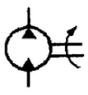
- 유압전도장치
- 정용량형 펌프･모터
- 차동실린더
- 가변용량형 펌프･모터
(정답률: 알수없음)
77. 정용적형 베인펌프에 있어서 회전속도 1500rpm 일 때 토출 압력 70㎏f/cm2로, 53ℓ/min의 토출량 및 축동력 7.4 kW를 측정하였다. 지금 이 펌프의 무부하시 유량이 56ℓ/min였다면, 체적효율은? (문제 오류로 정답이 정확하지 않습니다. 정답지를 찾지못하여 임의 정답 1번으로 설정하였습니다. 정답을 아시는 분께서는 오류 신고를 통하여 정답 입력 부탁 드립니다.)
- 39.6%
- 60.6%
- 75.6%
- 94.6%
(정답률: 알수없음)
78. 유압기기와 관련되는 유체의 동역학에 대한 다음의 설명 중 올바른 설명은? (문제 오류로 정답이 정확하지 않습니다. 정답지를 찾지못하여 임의 정답 1번으로 설정하였습니다. 정답을 아시는 분께서는 오류 신고를 통하여 정답 입력 부탁 드립니다.)
- 유체의 속도는 단면적이 큰 곳에서는 빠르다.
- 점성이 없는 비압축성의 액체가 수평관을 흐를 때. 압력수두와 위치수두 및 속도수두의 합은 일정하다.
- 유속이 크고 굵은 관을 통과할 때 층류가 발생한다.
- 유속이 작고 가는 관을 통과할 때 난류가 발생한다.
(정답률: 알수없음)
79. 1개의 유압 실린더에서 전진 및 후진 단에 각각의 리미트 스위치를 부착하는 이유 설명으로 가장 적합한 것은? (문제 오류로 정답이 정확하지 않습니다. 정답지를 찾지못하여 임의 정답 1번으로 설정하였습니다. 정답을 아시는 분께서는 오류 신고를 통하여 정답 입력 부탁 드립니다.)
- 실린더의 행정거리를 제한하기 위하여
- 실린더내의 온도를 제어하기 위하여
- 실린더의 속도를 제어하기 위하여
- 유압 장치의 외관을 고려하여
(정답률: 알수없음)
80. 유압회로에서 ‘정규 조작방법에 우선하여 조작할 수 있는 매체조작수단’으로 정의되는 에너지 제어･조작방식 일반에 관한 용어인 것은? (문제 오류로 정답이 정확하지 않습니다. 정답지를 찾지못하여 임의 정답 1번으로 설정하였습니다. 정답을 아시는 분께서는 오류 신고를 통하여 정답 입력 부탁 드립니다.)
- 솔레노이드 조작
- 간접 파이럿 조작
- 오버라이드 조작
- 직접 파이럿 조작
(정답률: 알수없음)
5과목: 건설기계일반 및 플랜트배관
81. 주조에서 탕구계 설계(gating design)시 고려하지 않아도 되는 사항은? (문제 오류로 정답이 정확하지 않습니다. 정답지를 찾지못하여 임의 정답 1번으로 설정하였습니다. 정답을 아시는 분께서는 오류 신고를 통하여 정답 입력 부탁 드립니다.)
- 연속의 법칙
- 압상(押上)주탕
- 베르누이의 방정식
- 뉴우튼의 법칙
(정답률: 알수없음)
82. 빌트업 에지가 생기는 것을 방지하기 위한 대책은? (문제 오류로 정답이 정확하지 않습니다. 정답지를 찾지못하여 임의 정답 1번으로 설정하였습니다. 정답을 아시는 분께서는 오류 신고를 통하여 정답 입력 부탁 드립니다.)
- 마찰계수가 큰 공구를 사용한다.
- 절삭속도를 작게한다.
- 윤활성이 작은 윤활유를 사용한다.
- 절삭깊이를 작게한다.
(정답률: 알수없음)
83. 한계게이지 방식의 특징에 해당되지 않는 것은? (문제 오류로 정답이 정확하지 않습니다. 정답지를 찾지못하여 임의 정답 1번으로 설정하였습니다. 정답을 아시는 분께서는 오류 신고를 통하여 정답 입력 부탁 드립니다.)
- 조작이 간단하므로 경험이 불필요한다.
- 분업 방식을 취할 수 있다.
- 제품의 실제 치수를 알 수 있다.
- 제품사이의 호환성이 있다.
(정답률: 알수없음)
84. 화염경화법의 장점이 아닌 것은? (문제 오류로 정답이 정확하지 않습니다. 정답지를 찾지못하여 임의 정답 1번으로 설정하였습니다. 정답을 아시는 분께서는 오류 신고를 통하여 정답 입력 부탁 드립니다.)
- 국부 담금질이 가능하다.
- 가열 온도의 조절이 쉽다.
- 일반 담금질에 비해 담금질 변형이 적다.
- 설비비가 적게 든다.
(정답률: 알수없음)
85. 선반에서 주분력이 18㎏f, 절삭속도가 150m/min 일 때, 절삭동력(PS)은 얼마인가? (문제 오류로 정답이 정확하지 않습니다. 정답지를 찾지못하여 임의 정답 1번으로 설정하였습니다. 정답을 아시는 분께서는 오류 신고를 통하여 정답 입력 부탁 드립니다.)
- 4
- 6
- 8
- 10
(정답률: 알수없음)
86. 펀치와 다이의 시어각(shear angle)에 관한 설명 중 옳은 것은? (문제 오류로 정답이 정확하지 않습니다. 정답지를 찾지못하여 임의 정답 1번으로 설정하였습니다. 정답을 아시는 분께서는 오류 신고를 통하여 정답 입력 부탁 드립니다.)
- 두꺼운 판을 가공하고 펀칭력을 감소시키기 위하여 다이나 펀치 날끝선에 경사를 붙인 것이 시어각이다.
- 피어싱에는 다이에, 블랭킹에는 펀치에 시어각을 붙인다.
- 모든 펀치에는 시어각을 두어 펀칭에서 힘을 감소시키는 것이 좋다.
- 다이에 시어각을 두면 다이의 수명이 연장되고 동력이 적게 들고 가공치수가 정확하다.
(정답률: 알수없음)
87. 강철을 소성가공할 때에 열간가공과 냉간가공은 무엇으로 구분하는가? (문제 오류로 정답이 정확하지 않습니다. 정답지를 찾지못하여 임의 정답 1번으로 설정하였습니다. 정답을 아시는 분께서는 오류 신고를 통하여 정답 입력 부탁 드립니다.)
- 재결정 온도
- 변태점 온도
- 담금질 온도
- 풀림 온도
(정답률: 알수없음)
88. 상품명에서 이름 지어진 링컨 용접법(Lincoln weld)은 어떤 용접을 말하는가? (문제 오류로 정답이 정확하지 않습니다. 정답지를 찾지못하여 임의 정답 1번으로 설정하였습니다. 정답을 아시는 분께서는 오류 신고를 통하여 정답 입력 부탁 드립니다.)
- 탄산(CO2)가스 아크 용접
- 서브머지드 아크 용접
- 스터드 용접
- 일렉트로 슬랙 용접
(정답률: 알수없음)
89. 미터계 보통 버니어 캘리퍼스의 주척(主尺) 9mm를 10등분 하면 최소 지시 눈금값은? (단 주척의 1눈금은 1mm이다.) (문제 오류로 정답이 정확하지 않습니다. 정답지를 찾지못하여 임의 정답 1번으로 설정하였습니다. 정답을 아시는 분께서는 오류 신고를 통하여 정답 입력 부탁 드립니다.)
- 0.02
- 0.01
- 0.1
- 0.2
(정답률: 알수없음)
90. 전해연마의 특징으로 틀린 것은? (문제 오류로 정답이 정확하지 않습니다. 정답지를 찾지못하여 임의 정답 1번으로 설정하였습니다. 정답을 아시는 분께서는 오류 신고를 통하여 정답 입력 부탁 드립니다.)
- 가공면에는 방향성이 있다.
- 복잡한 형상의 공작물, 선 등의 연마도 가능하다.
- 내마멸성, 내부식성이 좋아진다.
- 가공변질층이 없다.
(정답률: 알수없음)
91. 덤프트럭의 시간당 총작업량 산출에 대한 설명으로 틀린 것은? (문제 오류로 정답이 정확하지 않습니다. 정답지를 찾지못하여 임의 정답 1번으로 설정하였습니다. 정답을 아시는 분께서는 오류 신고를 통하여 정답 입력 부탁 드립니다.)
- 1회 사이클 시간에 비례한다.
- 작업효율에 비례한다.
- 적재용량에 비례한다.
- 가동 덤프트럭의 대수에 비례한다.
(정답률: 알수없음)
92. 콘크리트 펌프의 구성요소 중 서로 관련이 없는 것은? (문제 오류로 정답이 정확하지 않습니다. 정답지를 찾지못하여 임의 정답 1번으로 설정하였습니다. 정답을 아시는 분께서는 오류 신고를 통하여 정답 입력 부탁 드립니다.)
- 피스턴식 - 기계식
- 피스턴식 - 유압식
- 스퀴즈식 - 펌핑 튜브식
- 스퀴즈식 - 다이아프램식
(정답률: 알수없음)
93. 건설기계의 조합 작업에 관한 사항 중 틀린 것은? (문제 오류로 정답이 정확하지 않습니다. 정답지를 찾지못하여 임의 정답 1번으로 설정하였습니다. 정답을 아시는 분께서는 오류 신고를 통하여 정답 입력 부탁 드립니다.)
- 조합 작업수를 감소시켜 작업한다.
- 대기시간을 최소화 한다.
- 예비기계를 배치한다.
- 기계 대수를 많게 하여 가동률을 높인다.
(정답률: 알수없음)
94. 아스팔트 분배기의 구조 설명 중 적합하지 않는 것은? (문제 오류로 정답이 정확하지 않습니다. 정답지를 찾지못하여 임의 정답 1번으로 설정하였습니다. 정답을 아시는 분께서는 오류 신고를 통하여 정답 입력 부탁 드립니다.)
- 아스팔트는 기어펌프로 가압되어 스프레더에 의해 균일하게 살표된다.
- 살포바아의 길이는 한정되어 있다.
- 버너에 의한 가열장치가 부착되어 있다.
- 배관계통은 냉각방지를 위하여 보온이 있다.
(정답률: 알수없음)
95. 로우더의 바켓의 전경사각의 측정 위치는? (문제 오류로 정답이 정확하지 않습니다. 정답지를 찾지못하여 임의 정답 1번으로 설정하였습니다. 정답을 아시는 분께서는 오류 신고를 통하여 정답 입력 부탁 드립니다.)
- 바켓을 최고로 올린 상태에서 최대한 앞으로 기울인 상태
- 바켓을 최고로 올린 상태에서 최대한 뒤로 기울인 상태
- 바켓을 지면에서 최대한 앞으로 기울인 상태
- 바켓을 지면에서 최대한 뒤로 기울인 상태
(정답률: 알수없음)
96. 충격식 착암기를 그 사용법에 따라 분류할 때, 여기에 해당되지 않는 것은? (문제 오류로 정답이 정확하지 않습니다. 정답지를 찾지못하여 임의 정답 1번으로 설정하였습니다. 정답을 아시는 분께서는 오류 신고를 통하여 정답 입력 부탁 드립니다.)
- 드리프터(drifter)
- 싱커(sinker)
- 스토퍼(stopper)
- 스위퍼(sweeper)
(정답률: 알수없음)
97. 기중기에서 데릭(derrick)의 구성요소가 아닌 것은?
- 마스트(mast)
- 붐(boom)
- 불 휠(bull wheel)
- 덤퍼(dumper)
(정답률: 알수없음)
98. 버켓준설선의 장점을 설명한 것으로 맞지 않는 것은? (문제 오류로 정답이 정확하지 않습니다. 정답지를 찾지못하여 임의 정답 1번으로 설정하였습니다. 정답을 아시는 분께서는 오류 신고를 통하여 정답 입력 부탁 드립니다.)
- 준설능력이 크며 대용량 공사에 적합하다.
- 준설단가가 저렴하다.
- 토질의 질에 영향이 적다.
- 협소한 장소에서도 작업이 용이하다.
(정답률: 알수없음)
99. 스크레이퍼 작업에서 고려할 필요가 없는 것은? (문제 오류로 정답이 정확하지 않습니다. 정답지를 찾지못하여 임의 정답 1번으로 설정하였습니다. 정답을 아시는 분께서는 오류 신고를 통하여 정답 입력 부탁 드립니다.)
- 적재속도, 운반속도
- 회행속도, 운반거리
- 기어변환 시간, 보울의 용량
- 압토거리, 붐
(정답률: 알수없음)
100. 불도저의 작업속도가 3.6㎞/h, 견인력이 7500㎏f였다면, 이 작업에 필요한 이론상 견인출력은 몇 PS인가? (문제 오류로 정답이 정확하지 않습니다. 정답지를 찾지못하여 임의 정답 1번으로 설정하였습니다. 정답을 아시는 분께서는 오류 신고를 통하여 정답 입력 부탁 드립니다.)
- 75
- 85
- 100
- 122
(정답률: 알수없음)